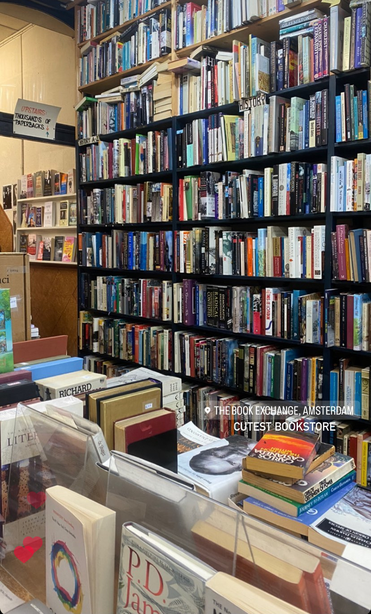
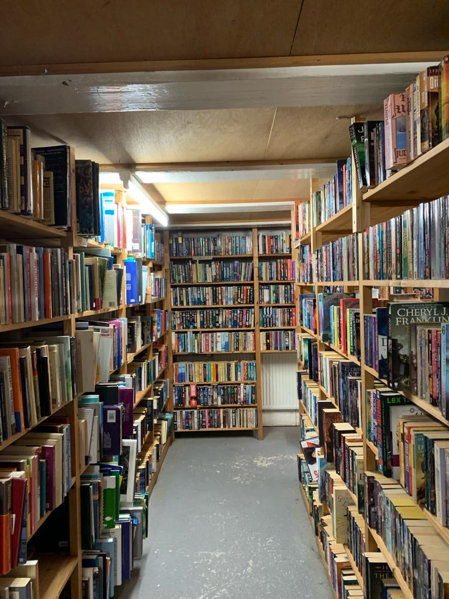

Schatzoeken voor Boekenwurmen In het hart van Amsterdam wacht een boekenparadijs op ontdekkingsreizigers: The Book Exchange. Deze gezellige boekwinkel is dé spot voor tweedehands Engelstalige boeken. Bij binnenkomst zie je planken vol diverse boeken, van klassiekers tot moderne verhalen. Elke bladzijde draagt zijn eigen verhaal, met ezelsoren en notities als bewijs van vorige lezers. Schatzoeken voor Boekenwurmen

Het leuke hier? Je mag niet alleen snuffelen, maar ook je eigen boeken ruilen of verkopen. Een bruisende plek waar boeken van eigenaar wisselen en lezers hun favorieten delen. De relaxte sfeer met de geur van oude boeken maakt The Book Exchange speciaal.

Ze behouden de charme van traditionele boekwinkels in een digitale wereld. Naast boekenverkoop hosten ze vaak leuke events en signeersessies.
Hier gaat het niet alleen om lezen, maar ook om verbinden en kletsen over verhalen die je raken. In een tijd van e-books en schermen, herinnert The Book Exchange ons aan de magie van een goed boek. Of je nu een literaire klassieker zoekt of iets obscuurs, hier ontdek je verhalen die wachten om gelezen te worden. Dus duik in dit boekenavontuur, waar elk boek zijn eigen unieke verhaal heeft.
je betaald voor een boek tussen de €3,00 tot €9,00. Het verschilt of een boek nieuw is gekomen en niet heel lang gepubliceert is.